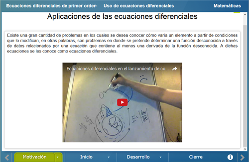
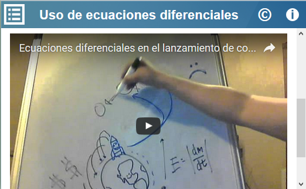
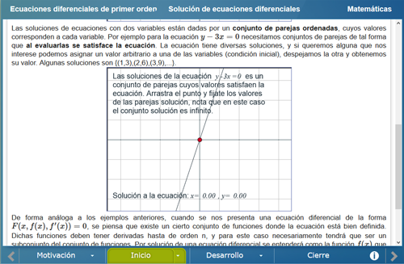
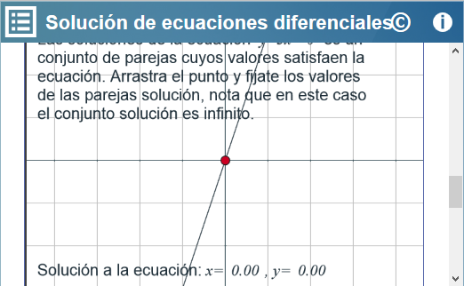
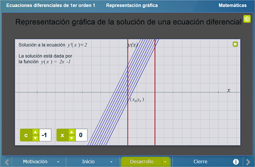
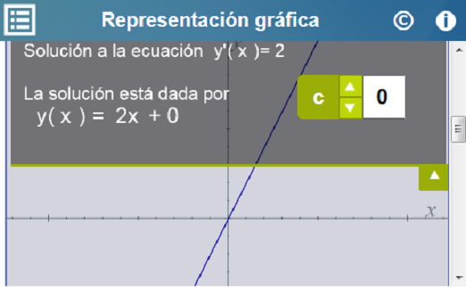
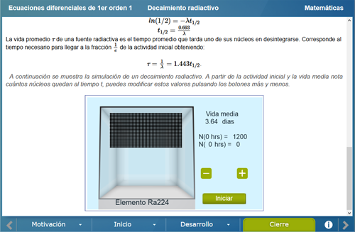
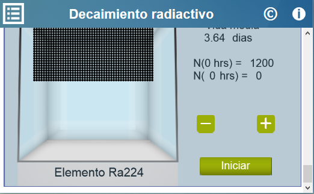

Ecuaciones Diferenciales de primer orden I
Ecuaciones Diferenciales de primer orden I
 Ecuaciones Diferenciales de primer orden I
Ecuaciones Diferenciales de primer orden I
Licenciatura: Matemáticas
Materia: Ecuaciones Diferenciales I
Unidad: 1 Ecuaciones diferenciales de primer orden.
Competencia específica: Utilizar los principios de ecuaciones diferenciales para resolverlas mediante diferentes técnicas de solución, además conocer como se aplican a un fenómeno físico.
A través de la observación e interacción de ecuaciones de primer orden, conocer qué tipo de ecuación
se presenta y cómo se puede obtener su solución.
Se muestran dos videos, en el primero se describe un fenómeno físico y como se puede entender mediante ecuaciones diferenciales, en el segundo video se describe brevemente lo que es una ecuación diferencial, se trata de forma general lo que son las características de una ecuación diferencial de primer orden.


Se muestran diversos ejemplos en los cuales se analizará a detalle cómo es la estructura de las ecuaciones diferenciales de primer orden, orden, grado, linealidad, exacta o no exacta.


En este apartado se muestra un ejemplo de una ecuación diferencial, se describen sus características y el usuario podrá interaccionar con la solución de la ecuación. A continuación se describe lo que es un sistema dinámico y finalmente se analizara un sistema de poblaciones.


Se muestra el fenómeno del decaimiento radiactivo y la ecuación que lo modela, se muestra la solución y se podrá elegir las condiciones iniciales para que a continuación se presente una animación de como ocurre el fenómeno dadas dichas condiciones iniciales.


| Diseño del contenido | Víctor Hugo García Jarillo (Facultad de Ciencias UNAM, LITE) |
| Diseño funcional | Víctor Hugo García Jarillo (Facultad de Ciencias UNAM, LITE) |
| Programación | Víctor Hugo García Jarillo (Facultad de Ciencias UNAM, LITE) |
| Diseño gráfico | Ricardo López Gómez |
| Coordinación | Leticia Montserrat Vargas Rocha |
| Diseño funcional | Victor Hugo García Jarillo (Facultad de Ciencias, UNAM) |
| Programación | Victor Hugo García Jarillo (Facultad de Ciencias, UNAM) |
| Diseño gráfico | Francisco Varela Fuentes |
| Coordinación | Leticia Montserrat Vargas Rocha |
| Desarrollo del contenedor | Oscar Escamilla González |
Los contenidos de esta unidad didáctica interactiva están bajo una licencia Creative Commons Reconocimiento-NoComercial-CompartirIgual.
La unidad didáctica fue creada con Arquímedes, una herramienta de código abierto.
La unidad didáctica contiene escenas elaboradas con Descartes, una herramienta de código abierto.
LITE - UnADM 2014